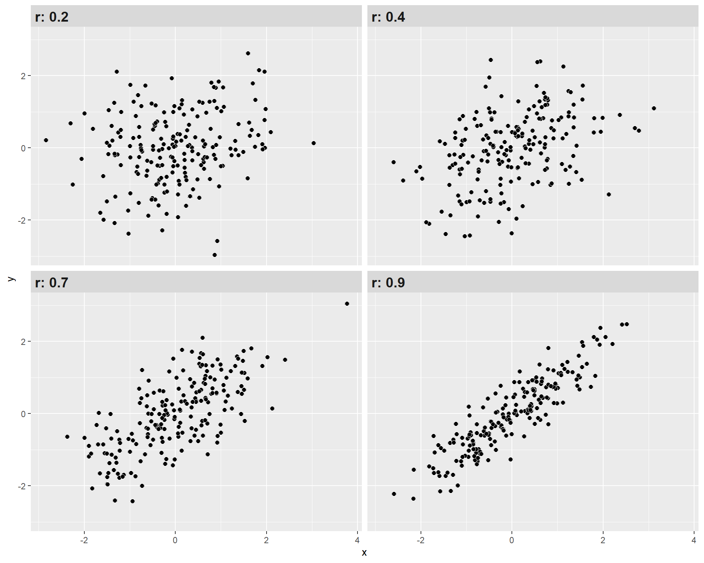

id <-seq(1,8) # identificador de cada caso
educ <- c(2,3,4,4,5,7,8,8)
ing <- c(1,3,3,5,4,7,9,11)
data <- data.frame(id,educ,ing)Práctico 05. Correlación
Metodología Cuantitativa Avanzada - Magíster en Ciencias Sociales
Objetivo de la práctica
El objetivo de esta guía práctica es aprender a calcular y graficar la correlación entre dos variables utilizando R. Particularmente, conocer maneras de reportar coeficientes de correlación y cómo interpretar sus tamaños de efecto en ciencias sociales. Además, nos introduciremos en el tratamiento de valores perdidos y otras medidas de correlación entre variables.
En detalle, aprenderemos:
- Cómo calcular una correlación de Pearson y graficarla
- Cómo reportar y presentar matrices de correlación.
- Interpretar el tamaño de efecto de una correlación.
- Tratamiento de casos perdidos.
- Qué es y cómo calcular la correlación de Spearman.
- Qué es el coeficiente de determinación \(R^2\).
1. Correlación
La correlación es una medida estadística que describe la asociación entre dos variables. Cuando existe correlación entre dos variables, el cambio en una de ellas tiende a estar asociado con un cambio en la otra variable.
En términos concretos, lo que observamos es cómo se comportan los valores de dos (o más) variables para cada observación, y si podemos suponer que ese comportamiento conjunto tiene algún patrón.
2. Correlación de Pearson
La correlación de Pearson (o coeficiente de correlación de pearson) es una medida estadística que cuantifica la relación lineal entre dos variables continuas. Esta medida va desde -1 hasta 1, donde:
r=1: Correlación positiva perfecta. Cuando una variable aumenta, la otra también aumenta en proporción constante.r=−1: Correlación negativa perfecta. Cuando una variable aumenta, la otra disminuye en proporción constante.r=0: No hay correlación lineal entre las variables. No hay una relación lineal discernible entre los cambios en las variables.
Cuanto más cercano esté el valor de r a 1 o -1, más fuerte será la correlación. Cuanto más cercano esté a 0, más débil será la correlación.

En el siguiente enlace pueden visualizar la correlación para dos variables cambiando la fuerza y el sentido de esta, al mismo tiempo que les permite observar la varianza compartida entre ambas variables.
2.1. Estimación de la correlación de Pearson
Utilizaremos un set mínimo simulado de datos para 8 casos:
- con 8 niveles de educación (ej: desde basica incompleta = 1, hasta postgrado = 8), y
- 12 niveles de rangos de ingreso (ej: desde menos de 100.000 = 1 hasta más de 10.000.000 = 12)
kableExtra::kbl(data, escape=F, full_width = F) %>%
kable_paper("hover")| id | educ | ing |
|---|---|---|
| 1 | 2 | 1 |
| 2 | 3 | 3 |
| 3 | 4 | 3 |
| 4 | 4 | 5 |
| 5 | 5 | 4 |
| 6 | 7 | 7 |
| 7 | 8 | 9 |
| 8 | 8 | 11 |
La correlación de Pearson se basa en la covarianza, que es una medida de asociación entre variables basada en la varianza de cada una de ellas:
\[\begin{align*} Covarianza = cov(x,y) &= \frac{\sum_{i=1}^{n}(x_i - \bar{x})(y_i - \bar{y})} {n-1}\\ \\ Correlación=r &= \frac{\sum_{i=1}^{n}(x_i - \bar{x})(y_i - \bar{y})} {(n-1)\sigma_x \sigma_y }\\ \\ &= \frac{\sum(x-\bar{x})(y-\bar{y})}{\sqrt{\sum(x-\bar{x})^{2} \sum(y-\bar{y})^{2}}} \end{align*}\]
Para obtener el coeficiente de correlación directamente en R se utiliza la función cor() :
cor(data$educ, data$ing)[1] 0.9512367Vamos por paso:
\((x_i - \bar{x})\) es la diferencia de un valor de una variable respecto de su promedio. Por ejemplo, si x=educación, y un caso tiene educación 6 y el promedio de educación es 2, entonces el valor de \((x_i - \bar{x})=4\)
\((y_i - \bar{y})\) : lo mismo pero para la otra varible, en el caso de nuestro ejemplo es ingreso.
\((x-\bar{x})(y-\bar{y})\) es la multiplicación de los dos pasos anteriores para cada caso.
\(\sum(x-\bar{x})(y-\bar{y})\) es la suma de estos valores para el total de los casos
En nuestra base de datos de ejemplo simulamos columnas adicionales con esta información:
- \((x_i - \bar{x})\) : dif_m_educ
- \((y_i - \bar{y})\) : dif_m_ing
- \((x-\bar{x})(y-\bar{y})\) : dif_xy
Y además las diferencias de promedio de cada variable al cuadrado:
- \((x_i - \bar{x})²\) : dif_m_educ2
- \((y_i - \bar{y})²\) : dif_m_ing2
data$dif_m_educ <- data$educ-mean(data$educ)
data$dif_m_ing <- data$ing-mean(data$ing)
data$dif_xy <- data$dif_m_educ*data$dif_m_ing
data$dif_m_educ2 <- (data$dif_m_educ)^2
data$dif_m_ing2 <- (data$dif_m_ing)^2En nuestra base de datos:
kableExtra::kbl(data, digits = 3,full_width = F) %>%
kable_paper("hover")| id | educ | ing | dif_m_educ | dif_m_ing | dif_xy | dif_m_educ2 | dif_m_ing2 |
|---|---|---|---|---|---|---|---|
| 1 | 2 | 1 | -3.125 | -4.375 | 13.672 | 9.766 | 19.141 |
| 2 | 3 | 3 | -2.125 | -2.375 | 5.047 | 4.516 | 5.641 |
| 3 | 4 | 3 | -1.125 | -2.375 | 2.672 | 1.266 | 5.641 |
| 4 | 4 | 5 | -1.125 | -0.375 | 0.422 | 1.266 | 0.141 |
| 5 | 5 | 4 | -0.125 | -1.375 | 0.172 | 0.016 | 1.891 |
| 6 | 7 | 7 | 1.875 | 1.625 | 3.047 | 3.516 | 2.641 |
| 7 | 8 | 9 | 2.875 | 3.625 | 10.422 | 8.266 | 13.141 |
| 8 | 8 | 11 | 2.875 | 5.625 | 16.172 | 8.266 | 31.641 |
Y obtenemos la suma de cada una de las tres últimas columnas, que es lo que se necesita para reemplazar en la fórmula de la correlación:
sum(data$dif_xy); sum(data$dif_m_educ2);sum(data$dif_m_ing2)[1] 51.625[1] 36.875[1] 79.875Reemplazando,
\[\begin{align*} r &= \frac{\sum(x-\bar{x})(y-\bar{y})}{\sqrt{\sum(x-\bar{x})^{2} \sum(y-\bar{y})^{2}}} \\ \\ &= \frac{51.625}{ \sqrt{36.875*79.875}} \\ \\ &= \frac{51.625}{54.271} \\ \\ &= 0.951 \end{align*}\]
Y comprobamos con la función cor() de R, que nos entrega la correlación de Pearson:
cor(data$educ, data$ing)[1] 0.9512367Como vimos en clases, el valor de la correlación va entre -1 y 1, donde el valor 0 significa que las dos variables no se encuentran correlacionadas, y el valor -1 y 1 significa que se encuentran completamente correlacionadas, positiva y negativamente, respectivamente.
En este caso, un valor de 0.95 es muy alto, y significa que las variables ingreso y educación, en nuestra base de datos simulada, se encuentran fuertemente correlacionadas.
2.2. Diagrama de dispersión (nube de puntos o scatterplot)
Siempre es recomendable acompañar el valor de la correlación con una exploración gráfica de la distribución bivariada de los datos. El gráfico o diagrama de dispersión es una buena herramienta, ya que muestra la forma, la dirección y la fuerza de la relación entre dos variables cuantitativas.
Este tipo de gráfico lo podemos realizar usando la librería ggplot2.
pacman::p_load(ggplot2)
plot1 <- ggplot(data,
aes(x=educ, y=ing)) +
geom_point(colour = "red", size = 5) +
labs(x = "Educación", y = "Ingresos", title = "Relación entre Educación e Ingresos") +
theme_minimal() +
theme(
plot.title = element_text(size = 20, face = "bold", hjust = 0.5),
axis.title.x = element_text(size = 16),
axis.title.y = element_text(size = 16),
axis.text.x = element_text(size = 14),
axis.text.y = element_text(size = 14)
)
plot1En el gráfico podemos ver como se crea una nube de puntos en las intersecciones de los valores para ambas variables de cada caso.
2.3. El cuarteto de Anscombe
Ahora, revisaremos un muy buen ejemplo de la importancia de la exploración gráfica de los datos mediante un ejemplo de Anscombe (1973), que permite visualizar las limitaciones del coeficiente de correlación.
Primero, crearemos la base de datos:
anscombe <- data.frame(
x1 = c(10, 8, 13, 9, 11, 14, 6, 4, 12, 7, 5),
y1 = c(8.04, 6.95, 7.58, 8.81, 8.33, 9.96, 7.24, 4.26, 10.84, 4.82, 5.68),
x2 = c(10, 8, 13, 9, 11, 14, 6, 4, 12, 7, 5),
y2 = c(9.14, 8.14, 8.74, 8.77, 9.26, 8.10, 6.13, 3.10, 9.13, 7.26, 4.74),
x3 = c(10, 8, 13, 9, 11, 14, 6, 4, 12, 7, 5),
y3 = c(7.46, 6.77, 12.74, 7.11, 7.81, 8.84, 6.08, 5.39, 8.15, 6.42, 5.73),
x4 = c(8, 8, 8, 8, 8, 8, 8, 19, 8, 8, 8),
y4 = c(6.58, 5.76, 7.71, 8.84, 8.47, 7.04, 5.25, 12.50, 5.56, 7.91, 6.89)
)Calculamos la correlación para cada par de datos:
cor(anscombe$x1, anscombe$y1); cor(anscombe$x2, anscombe$y2); cor(anscombe$x3, anscombe$y3); cor(anscombe$x4, anscombe$y4)[1] 0.8164205[1] 0.8162365[1] 0.8162867[1] 0.8165214Podemos observar que los valores de las correlaciones son equivalentes, por lo tanto podríamos pensar que todos los pares de columnas se encuentran correlacionados de manera similar.
Pero, ¿será suficiente con esa información? Pasemos a revisar los gráficos de dispersión de cada par de variables.
ggplot(anscombe, aes(x = x1, y = y1)) +
geom_point(colour = "red",
size = 5) +
geom_smooth(method = "lm", se = FALSE, color="blue", size=0.5) +
labs(title = "Caso I")ggplot(anscombe, aes(x = x2, y = y2)) +
geom_point(colour = "green",
size = 5) +
geom_smooth(method = "lm", se = FALSE, color="blue", size=0.5) +
labs(title = "Caso II")ggplot(anscombe, aes(x = x3, y = y3)) +
geom_point(colour = "yellow",
size = 5) +
geom_smooth(method = "lm", se = FALSE, color="blue", size=0.5) +
labs(title = "Caso III")ggplot(anscombe, aes(x = x4, y = y4)) +
geom_point(colour = "orange",
size = 5) +
geom_smooth(method = "lm", se = FALSE, color="blue", size=0.5) +
labs(title = "Caso IV")Como vemos, con distintas distribuciones las correlaciones pueden ser las mismas, principalmente porque Pearson es una medida que solo captura relaciones lineales (rectas), además de verse influido fuertemente por valores extremos. Por lo mismo, es relevante siempre una buena visualización de la distribución bivariada de los datos como complemento al cálculo del coeficiente de correlación.
2.4. Aplicación práctica
En esta práctica trabajaremos con un subconjunto de datos previamente procesados del Estudio Longitudinal Social de Chile (ELSOC) del año 2016, elaborado por COES. Para este ejercicio, obtendremos directamente esta base desde internet. No obstante, también tienes la opción de acceder a la misma información a través del siguiente enlace: ELSOC 2016. Desde allí, podrás descargar el archivo que contiene el subconjunto procesado de la base de datos ELSOC 2016.
Preparación datos
Comencemos por preparar nuestros datos. Iniciamos cargando las librerías necesarias.
pacman::p_load(tidyverse, # Manipulacion datos
sjmisc, # Descriptivos
sjPlot, # Tablas
kableExtra, #Tablas
GGally, # Correlaciones
corrplot) # Correlaciones
options(scipen = 999) # para desactivar notacion cientifica
rm(list = ls()) # para limpiar el entorno de trabajoCargamos los datos directamente desde internet (por esta vez).
load(url("https://multivariada.netlify.app/assignment/data/proc/ELSOC_ess_merit2016.RData")) A continuación, exploramos la base de datos proc_elsoc.
names(proc_elsoc) # Nombre de columnas[1] "mesfuerzo" "mtalento" "ess" "edcine" "sexo" "edad"
[7] "pmerit" dim(proc_elsoc) # Dimensiones[1] 2927 7Contamos con 7 variables (columnas) y 2927 observaciones (filas).
Ahora, profundicemos un poco más y observemos algunos estadísticos descriptivos de resumen de nuestra base de datos. Utilizaremos la función descr del paquete sjmisc.
sjmisc::descr(proc_elsoc,
show = c("label","range", "mean", "sd", "NA.prc", "n")) %>%
kable(.,"markdown")| var | label | n | NA.prc | mean | sd | range | |
|---|---|---|---|---|---|---|---|
| 4 | mesfuerzo | Recompensa: esfuerzo | 2909 | 0.6149641 | 2.5727054 | 1.0466874 | 4 (1-5) |
| 5 | mtalento | Recompensa: talento | 2907 | 0.6832935 | 2.7389061 | 1.0596182 | 4 (1-5) |
| 3 | ess | Estatus Social Subjetivo | 2915 | 0.4099761 | 4.3300172 | 1.5666965 | 10 (0-10) |
| 2 | edcine | Educación | 2925 | 0.0683293 | 3.1839316 | 1.2066058 | 4 (1-5) |
| 7 | sexo | Sexo | 2927 | 0.0000000 | 0.6026648 | 0.4894300 | 1 (0-1) |
| 1 | edad | Edad | 2927 | 0.0000000 | 46.0908780 | 15.2867983 | 70 (18-88) |
| 6 | pmerit | Meritocracia promedio | 2898 | 0.9907755 | 2.6538992 | 0.9694792 | 4 (1-5) |
Tenemos algunos valores o casos perdidos en ciertas variables. ¿Cómo lidiar con los casos perdidos?
Tratamiento de casos perdidos
Trabajar con datos a menudo implica enfrentar valores perdidos (NA), lo que puede ser un gran desafío. Estos valores indican la ausencia de un valor en una base de datos. Los valores perdidos pueden originarse por diversas razones, como el sesgo de no respuesta en encuestas, errores en la entrada de datos o simplemente la falta de información para ciertas variables.
| X1 | X2 | X3 | X4 |
|---|---|---|---|
| NA | 4 | 1 | Hola |
| 7 | 1 | 4 | No soy un NA |
| 8 | NA | 2 | NA |
| 9 | NA | 9 | Amo R |
| 3 | 3 | 6 | NA |
La presencia de valores perdidos puede tener un impacto considerable en la precisión y confiabilidad de los análisis estadísticos, lo que a su vez puede conducir a resultados sesgados y conclusiones incorrectas.
Existen varias formas de tratar valores perdidos, que van desde enfoques simples hasta métodos más complejos, como la imputación. En esta ocasión, nos centraremos en las dos estrategias más comunes:
trabajar exclusivamente con casos completos (listwise) o
retener los casos con valores perdidos, pero excluyéndolos al calcular estadísticas (pairwise).
a) Analísis con casos completos: listwise deletion
Este enfoque es uno de los más conocidos: implica remover completamente las observaciones que tienen valores perdidos en cualquier variable de interés. En otras palabras, si una fila/caso en un conjunto de datos tiene al menos un valor faltante en alguna de las variables que estás considerando, se eliminará por completo.
En R, esto podemos hacerlo con la función na.omit. Para hacer esto, sigamos estos pasos:
- respaldar la base de datos original en el espacio de trabajo (por si queremos en adelante realizar algún análisis referido a casos perdidos)
- contamos el número de casos con el comando
dim. - contamos cuántos y dónde tenemos casos perdidos.
- borramos los casos perdidos con
na.omit. - contamos nuevamente con
dimpara asegurarnos que se borraron.
proc_elsoc_original <- proc_elsoc
dim(proc_elsoc)[1] 2927 7sum(is.na(proc_elsoc))[1] 81colSums(is.na(proc_elsoc))mesfuerzo mtalento ess edcine sexo edad pmerit
18 20 12 2 0 0 29 proc_elsoc <- na.omit(proc_elsoc)
dim(proc_elsoc)[1] 2887 7Ahora nos quedamos con 2887 observaciones sin casos perdidos.
Aunque simple de implementar, con este enfoque podemos perder información importante, especialmente si los valores perdidos no se distribuyen aleatoriamente.
Nota
Siempre hay que intentar rescatar la mayor cantidad de casos posibles. Por lo tanto, si un listwise genera más de un 10% de casos perdidos se debe detectar qué variables esta produciendo esta pérdida e intentar recuperar datos. Puedes revisar un ejemplo aquí.
b) Retener pero excluir: pairwise deletion
A diferencia del anterior, este es un enfoque en el que las observaciones se utilizan para el análisis siempre que tengan datos disponibles para las variables específicas que se están analizando. En lugar de eliminar toda una fila si falta un valor, se eliminan solo los valores faltantes en las variables que se están analizando en ese momento.
Para hacer esto en R debemos siempre verificar e indicar en nuestro código si queremos (o no) remover los NA para realizar los análisis.
mean(proc_elsoc_original$pmerit); mean(proc_elsoc$edad); mean(proc_elsoc$ess)[1] NA[1] 45.98337[1] 4.333564mean(proc_elsoc_original$pmerit, na.rm = TRUE); mean(proc_elsoc$edad, na.rm = TRUE); mean(proc_elsoc$ess, na.rm = TRUE)[1] 2.653899[1] 45.98337[1] 4.333564Con el primer código no obtuvimos información sustantiva en ciertas variables, pero con el segundo sí al remover los NA solo de dicha variable para un cálculo determinado.
3. Matrices de correlación
La correlación es una estimación de asociación de dos variables. Sin embargo, en los análisis de bases de datos usualmente se exploran asociaciones entre múltiples pares de variables, lo que genera una matriz de correlación. En una matriz, las variables se presentan en las filas y las columnas, y en las celdas donde se cruzan los pares de variables se muestra su coeficiente de correlación.
En su forma simple en R se aplica la función cor a la base de datos, y la guardamos en un objeto que le damos el nombre M para futuras operaciones:
M <- cor(proc_elsoc_original, use = "complete.obs")
M mesfuerzo mtalento ess edcine sexo
mesfuerzo 1.000000000 0.69768811 -0.004312135 -0.12167659 -0.04480502
mtalento 0.697688106 1.00000000 0.018447696 -0.10582754 -0.03759340
ess -0.004312135 0.01844770 1.000000000 0.28959248 -0.03745546
edcine -0.121676591 -0.10582754 0.289592479 1.00000000 -0.08682644
sexo -0.044805024 -0.03759340 -0.037455462 -0.08682644 1.00000000
edad 0.096495547 0.07383771 -0.066031873 -0.37660283 0.06121699
pmerit 0.920404032 0.92224547 0.007740598 -0.12341680 -0.04469515
edad pmerit
mesfuerzo 0.09649555 0.920404032
mtalento 0.07383771 0.922245465
ess -0.06603187 0.007740598
edcine -0.37660283 -0.123416804
sexo 0.06121699 -0.044695146
edad 1.00000000 0.092369792
pmerit 0.09236979 1.000000000Este es el reporte simple, pero no muy amigable a la vista. Para una versión más reportable, utilizamos la funcion tab_corr.
sjPlot::tab_corr(proc_elsoc_original,
triangle = "lower")| Recompensa: esfuerzo | Recompensa: talento | Estatus Social Subjetivo | Educación | Sexo | Edad | Meritocracia promedio | |
| Recompensa: esfuerzo | |||||||
| Recompensa: talento | 0.698*** | ||||||
| Estatus Social Subjetivo | -0.004 | 0.018 | |||||
| Educación | -0.122*** | -0.106*** | 0.290*** | ||||
| Sexo | -0.045* | -0.038* | -0.037* | -0.087*** | |||
| Edad | 0.096*** | 0.074*** | -0.066*** | -0.377*** | 0.061** | ||
| Meritocracia promedio | 0.920*** | 0.922*** | 0.008 | -0.123*** | -0.045* | 0.092*** | |
| Computed correlation used pearson-method with listwise-deletion. | |||||||
La distinción entre listwise y pairwise es relevante al momento de estimar matricies de correlación, donde esta decisión debe estar claramente explicitada y fundamentada. En ejemplo de tabla anterior usamos listwise que es el argumento por defecto (y nos lo indica al final de la tabla).
Veamos como hacerlo con pairwise:
sjPlot::tab_corr(proc_elsoc_original,
na.deletion = "pairwise", # espeficicamos tratamiento NA
triangle = "lower")| Recompensa: esfuerzo | Recompensa: talento | Estatus Social Subjetivo | Educación | Sexo | Edad | Meritocracia promedio | |
| Recompensa: esfuerzo | |||||||
| Recompensa: talento | 0.696*** | ||||||
| Estatus Social Subjetivo | -0.006 | 0.016 | |||||
| Educación | -0.124*** | -0.109*** | 0.287*** | ||||
| Sexo | -0.044* | -0.036 | -0.035 | -0.090*** | |||
| Edad | 0.099*** | 0.075*** | -0.068*** | -0.379*** | 0.062*** | ||
| Meritocracia promedio | 0.920*** | 0.922*** | 0.008 | -0.125*** | -0.043* | 0.092*** | |
| Computed correlation used pearson-method with pairwise-deletion. | |||||||
Con esta mejor visualización, algunas observaciones sobre la matriz de correlaciones:
- En esta matriz las variables están representadas en las filas y en las columnas.
- Cada coeficiente expresa la correlación de una variable con otra. Por ejemplo, la correlación entre la variable de
mesfuerzoymtalentoes 0.69. - La información de cada coeficiente se repite sobre y bajo la diagonal, ya que es el mismo par de variables pero en el orden alterno. Por convención en general se omiten las correlaciones redundantes sobre la diagonal, por eso aparece en blanco.
- En la diagonal corresponde que todos los coeficientes sean 1, ya que la correlación de una variable consigo misma es perfectamente positiva.
Otra manera de presentar matrices de correlación es mediante gráficos. Veamos un ejemplo con la función corrplot.mixed de la librería corrplot sobre nuestra matriz M ya creada.
corrplot.mixed(M)Este gráfico/matriz representa el grado de asociación entre variables mediante el tamaño de los círculos e intensidad de colores, y el signo de la asociación se representa con una gradiente de colores que va del azul (positivo) al rojo (negativo).
Otra manera de graficar la matriz es con la función ggpairs del paquete GGally, que nos entrega no solo el valor del coeficiente y su significancia (***), si no que también un scatter del cruce entre variables.
ggpairs(proc_elsoc) Finalmente, también se puede representar la correlación entre dos variables en un gráfico de nube de puntos o scatterplot.
sjPlot::plot_scatter(proc_elsoc, edad, ess)Donde:
- cada punto representa un caso
- la forma de la nube indica si la asociación es positiva, negativa o neutra:

En el caso de nuestra nube de puntos entre edad y estatus social subjetivo, observamos que no hay asociación (lo que ya era indicado por su correlación de -0.07 observada en la matriz de correlaciones).
4. Tamaños de efecto
¿Y cómo puedo saber si el valor de la correlación es alto, medio o bajo? Si bien la correlación no nos indica causalidad, si nos permite conocer la dirección y fuerza de asociación entre dos variables. Un estándar para determinar qué tan fuerte es dicha asociación en las ciencias sociales es el propuesto por Cohen (1998).
| r | Significado aproximado (Cohen 1988) |
|---|---|
| < ±0.1 | Muy pequeño |
| ±0.1–0.3 | Pequeño |
| ±0.3–0.5 | Moderado |
| >±0.5 | Grande |
Con estos criterios podemos interpretar de mejor manera nuestros resultados de correlación. Como se observa, mientras más alto (sea en + o -) el coeficiente, más juntos estarán los datos (puntos), mostrando un patrón.

Interpretación
Recordemos nuestra matriz del comienzo:
Tenemos que la correlación entre la variable de estatus social subjetivo y años de educación es 0.3. ¿Cómo interpreto esto?
Una manera recomendable es la siguiente:
El coeficiente de correlación de Pearson entre estatus social subjetivo y años de educación es positivo y moderado (r = 0.3) según Cohen (1988).
5. Correlación Spearman
Cuando queremos conocer la asociación entre variables que son ordinales y/o cuando nuestras variables no cumplen con los supuestos de distribución normal, podemos utilizar la correlación de Spearman.
- El coeficiente de correlación de Spearman es una medida estadística que evalúa la relación entre variables al considerar no solo la relación lineal entre ellas, sino también su relación de orden.
- Emplea rangos en lugar de valores numéricos para evaluar la relación.
- Sus valores están entre -1 y 1.
- Es alta cuando las observaciones tienen un ranking similar.
En R calcularlo es sencillo, pero debemos tener en cuenta que las variables que relacionemos tengan un orden de rango similar: por ejemplo, que el valor más bajo sea el rango más bajo y que el valor más alto sea el rango más alto.
Tomemos por ejemplo las variables mesfuerzo y mtalento.
sjmisc::frq(proc_elsoc$mesfuerzo)x <numeric>
# total N=2887 valid N=2887 mean=2.57 sd=1.05
Value | N | Raw % | Valid % | Cum. %
---------------------------------------
1 | 355 | 12.30 | 12.30 | 12.30
2 | 1324 | 45.86 | 45.86 | 58.16
3 | 489 | 16.94 | 16.94 | 75.10
4 | 641 | 22.20 | 22.20 | 97.30
5 | 78 | 2.70 | 2.70 | 100.00
<NA> | 0 | 0.00 | <NA> | <NA>sjmisc::frq(proc_elsoc$mtalento)x <numeric>
# total N=2887 valid N=2887 mean=2.74 sd=1.06
Value | N | Raw % | Valid % | Cum. %
---------------------------------------
1 | 288 | 9.98 | 9.98 | 9.98
2 | 1155 | 40.01 | 40.01 | 49.98
3 | 557 | 19.29 | 19.29 | 69.28
4 | 805 | 27.88 | 27.88 | 97.16
5 | 82 | 2.84 | 2.84 | 100.00
<NA> | 0 | 0.00 | <NA> | <NA>Ahora, calculemos el coeficiente de correlación de Spearman con cor.test.
cor.test(proc_elsoc$mesfuerzo, proc_elsoc$mtalento, method = "spearman") #especificamos metodo spearman
Spearman's rank correlation rho
data: proc_elsoc$mesfuerzo and proc_elsoc$mtalento
S = 1200288294, p-value < 0.00000000000000022
alternative hypothesis: true rho is not equal to 0
sample estimates:
rho
0.700707 Ahora conocemos el valor del coeficiente mediante al argumento rho, que es igual a 0.7, siendo positivo y grande según los criterios de Cohen (1988).
6. Coeficiente de determinación
El coeficiente de determinación \(R^2\) es una medida estadística que indica la proporción de la varianza total de una variable que es explicada por otra(s) variable(s). En pocas palabras,
- se utiliza para evaluar cuánta de la variabilidad de una variable se debe a otra variable.
- sus valores van desde 0 a 1, en donde 0 indica que ambas variables comparten el 0% de su varianza, y 1 que comparten el 100% de su varianza.
En el contexto de la correlación entre solo dos variables, el \(R^2\) es igual a elevar al cuadrado el coeficiente de correlación = (r)^2. Esto nos permite conocer qué tanto la variabilidad de una variable X estaría asociado a la variabilidad de otra variable Y.
En nuestro ejemplo anterior entre estatus social subjetivo y años de educación, teníamos que su coeficiente de correlación era r = 0.3.
coef_r <- M[4,3] # seleccionamos el coef de nuestra matriz
coef_r[1] 0.2895925Calculemos el \(R^2\) de esta asociación.
coef_r^2[1] 0.0838638Con esto, podemos decir que el 9% de la variabilidad del estatus social subjetivo es compartido con la variabilidad en los años de educación.